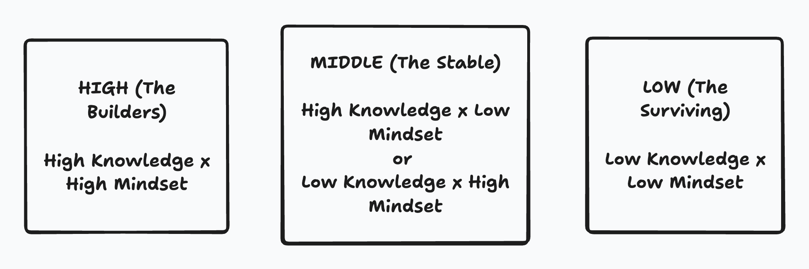

The Purpose Reset
A Talk on Resetting Your Life: Personal, Academic, and Career
In my six years of professional and academic life, I have noticed something. There are three types of people in this world. And what separates them is not luck, not background, not even opportunity, though those matter. What separates them is two things: what they know, and what they are willing to do with what they know.
This talk is about understanding where you are, where you want to be, and how to get there.
Before we begin, I want you to know something. This is not a motivational talk. I am not here to make you feel good about yourself. I am here to tell you the truth. The way I see it, the way I have lived it, the way I have observed it. Some of it might hurt. Some of it might not apply to you. But all of it is real.
If you want to reset your purpose, maybe go from low to middle, or middle to high, you need to know what the world requires of you. Not what you think it requires. What it actually requires.
Part One: The Framework
The Three Types of People
I have been thinking about this for a long time. Why do some people seem to have everything figured out while others are just... surviving? Why do some people build empires while others cannot even build savings? Why do some people wake up excited while others wake up dreading the day?
And I realized something. It is not about intelligence. I know plenty of intelligent people who are stuck. It is not about hard work alone. I know people who work sixteen hours a day and still cannot get ahead. It is not even about opportunity, though yes, some people have more doors open to them.
What I realized is this: there are three types of people in life. And what separates them is not one thing, but two things working together.
Let me explain each one. Not in academic language, but in real talk.
The Builders (High)
These are the creators. The unconventionals. The ones who are not afraid of failing in company, in ideas, in research, in movements, in arts, in products. They put in insane hours of focused effort. They are constantly learning. They have experienced a lot of failures, more than most people will ever attempt.
They might be specializing in one thing or they might be generalists, but either way, they have a deep understanding of how things work. Economics. Institutions. Networks. They understand the systems of the world, not just the surface of them.
They have high agency. They take on uncomfortable levels of responsibility. They do not wait for someone to give them permission. And they are active in finances and investing. They understand that money is a tool, not just a reward.
These are the Aristotles. The Elons. The people who change things.
The Stable (Middle)
This is where most people are. And there is nothing wrong with being here, if this is what you choose. The problem is when you are here and you think you are somewhere else, or when you want to be somewhere else but do not know how to move.
The Stable follows the script. High school. University. A job. Maybe some promotions. They do not ask too many questions. They might be insanely knowledgeable. I know people who can tell you everything about history, about science, about philosophy. But they have no strength to press on. No drive to turn that knowledge into something.
Or they might be the opposite. Super hardworking. Moved from low to middle through pure grit and hustle. But they have zero information. Zero direction. They are running fast, but they do not know where they are running to.
I call them the autopilots. Some savings. Family. Goes on a walk with the dog every evening. Many friends or few friends. Just... okay.
The Two Types of Middle:
Type A, The Hardworking: Super hardworking, moved from low to mid through effort, but zero direction or information.
Type B, The Knowledgeable: Insanely knowledgeable, but no strength, drive, or courage to press on.
But Here Is Something Important
Being in the Middle is okay. Let me say that again: being in the Middle is okay.
Life is already trouble. There is enough stress, enough pressure, enough chaos in just existing. If you have found stability, if you have peace of mind, if you can sleep at night without worrying about tomorrow, that is not failure. That is something many people will never have.
Not everyone needs to be a Builder. Not everyone needs to change the world. Some people just want to live a good life. Raise their kids. Have dinner with their family. Walk the dog. Watch the sunset. There is nothing wrong with that. In fact, there is something beautiful about it.
The point of this talk is not to make you feel bad for being in the Middle. The point is to make sure you are there by choice, not by accident. To make sure you know the options. To make sure that if you want more, you know the path. But if you have looked at the path and decided that peace is more valuable than achievement, that is a valid decision. That is wisdom.
Peace of mind is not something to be ashamed of. It is something to protect.
The Surviving (Low)
This is hard to write about because I have seen it. I have lived near it. Maybe you have too.
Mostly poor. Life is unstable. Captured by failing systems, or systems that have already failed them. Bills. Family issues. Random jobs. No proper education. No exposure to the things that could help them.
Underdeveloped mind. Does not read. Does not have the time or energy to read. Just trying to survive each day. Trapped in cycles that feel impossible to break.
And here is the painful truth: many people stay here not because they are bad people, but because no one showed them another way. No one gave them the map. No one lit the engine.
• • •
The Formula: MAP × ENGINE
So what separates these three types? Two things. I call them the MAP and the ENGINE.
Knowledge is the MAP. It tells you where to go. It shows you the paths that exist, the opportunities available, the systems you can use or avoid. Without knowledge, you are walking blind. You might be walking fast, you might be running, but you do not know where you are going.
Mindset is the ENGINE. It is what moves you. Grit. Consistency. Perseverance. Focus. Discipline. Hard work. Without the engine, you know where to go but you never get there. You read the books but never apply them. You make the plans but never execute them.
You need both.
If you have the map but no engine, you are Type B Middle, knowledgeable but stuck. If you have the engine but no map, you are Type A Middle, hardworking but directionless. If you have neither, you are in Surviving. If you have both, you are a Builder.
Academic knowledge cannot make wealth for you.
This is why some people with multiple degrees are still struggling. They have knowledge, but it is the wrong kind, or they do not know how to apply it. They learned facts but not systems. They learned theories but not execution.
And this is why some people who dropped out of school are doing better than PhDs. They might not have academic knowledge, but they have the knowledge that matters: self-knowledge, world knowledge, system knowledge. And they have the mindset to use it.
I am not saying do not go to school. I am saying understand what school is for and what it is not for. School gives you some knowledge and some credentials. It does not give you everything. The rest, you have to find yourself.
What Makes Knowledge (The MAP)
When I say knowledge, I do not just mean book knowledge. I mean the information that actually helps you navigate life. There are four types:
1. Your Truth
Purpose. Character. Work. Relationships. This is knowing yourself at the deepest level. What do you actually want? Not what your parents want. Not what society says you should want. What do you want? What kind of person do you want to be? What kind of work makes you come alive? What kind of relationships do you need?
2. Self Knowledge
Gifts. Weaknesses. Passions. Limits. Seasons. This is different from your truth. This is knowing what you are good at and what you are not. Knowing your passions, but also knowing when those passions change. Knowing your limits, and knowing when to push past them and when to respect them. Knowing that you have seasons: times of growth, times of rest, times of change.
3. World & Systems
Career. School. Money. Opportunities. Technology. This is understanding how the world works. Not how it should work. How it actually works. How do you get a job? How does money really work? What opportunities exist that you do not know about? What systems can you use? What systems are using you?
4. Skills
How to study. How to write a CV. How to design. How to lead. How to communicate. How to manage time. These are the practical abilities that let you execute on everything else. You can have all the knowledge in the world, but if you cannot communicate it, it is useless. If you cannot manage your time, you will never build anything.
Most people are missing at least one of these. They know themselves but do not understand the world. They understand the world but do not know themselves. They have skills but no direction. They have direction but no skills.
The Builders have all four. Not perfectly. Nobody has perfect knowledge. But enough to move forward effectively.
What Makes Mindset (The ENGINE)
Mindset is not just "thinking positive." That is too simple. Mindset is what keeps you going when things get hard. It is what makes you show up on the days you do not feel like it. It is the engine that turns knowledge into action.
Consistency
Showing up every single day. Not just when you feel inspired. Not just when it is easy. Every day. This is the foundation of everything else.
Grit & Tenacity
Refusing to give up when it gets hard. And it will get hard. If you are doing anything worthwhile, there will be moments when you want to quit. Grit is what keeps you in the game.
Perseverance
Pushing through failures and setbacks. Not just surviving them, but learning from them and coming back stronger. Every successful person has failed more times than unsuccessful people have tried.
Focus & Discipline
Staying on the path. Ignoring distractions. In a world designed to steal your attention, focus is a superpower. Discipline is doing what needs to be done even when you do not feel like doing it.
Hard Work
Putting in the hours. Especially when you do not feel like it. There is no shortcut to this. If you want to be insanely great like Aristotle or Elon, you cannot be doing the bare minimum. There is an effort required. Insane effort at it.
The single greatest skill you can develop is the ability to stay in a great mood in the absence of things to be in a great mood about.
I think about this all the time. Life is not always good. Things do not always go your way. But if you can maintain your energy, your drive, your positivity even when circumstances are against you, that is when you become unstoppable.
Part Two: The Transitions
From Low to Middle
If you are in the Surviving category, the first goal is to get to Middle. Not to skip to High, that is not realistic. Just get to stable ground first.
The Truth About Family
Let me say something that might be uncomfortable. If you were born into a poor background, if everyone around you is mediocre, you naturally grow up to be mediocre. That is not an insult. That is just how it works. We become what we see. We absorb the beliefs of the people who raised us. We inherit their ceilings.
Your parents did not dream of you becoming extraordinary. They dreamed of you surviving. Maybe getting a stable job. Maybe not struggling the way they struggled. Their dreams for you were shaped by their own limitations. And you absorbed those dreams without realizing it.
The conversations at your dinner table were not about investments, or building companies, or changing the world. They were about bills. About making it to the next month. About who in the neighborhood got a job, or lost one. That becomes your normal. That becomes what you think life is.
Sometimes You Have to Leave
Here is something nobody wants to say: leaving Low to Middle might mean changing location. Physically leaving. Not because your family is bad. Not because your neighborhood is worthless. But because the environment keeps you stuck.
When everyone around you is in survival mode, survival becomes the only thing you can see. When nobody around you has built anything, building seems impossible. When mediocrity is normal, excellence feels like arrogance.
Sometimes you need to put yourself in a new environment. A new city. A new school. A new community. Somewhere where the baseline is higher. Where what seemed impossible is just... normal. Where people expect more from themselves and from you.
This is hard. Leaving feels like betrayal sometimes. Your family might not understand. Your old friends might resent you. But staying in an environment that keeps you small is not loyalty. It is slow death.
The Practical Steps
This transition requires building the basics:
- Get basic systems in place. A routine. A stable income, even if small. A place to live. These are not dreams, these are foundations. You cannot build a house on sand.
- Start learning. Read. If you cannot read, listen. If you cannot listen, watch. There is more free information available now than at any point in human history. Khan Academy. YouTube. Libraries. Use them.
- Find one person who is where you want to be. Not a celebrity. Not someone unreachable. Someone you can actually talk to. Learn from them. Ask them questions. Model their behavior. This person shows you what is possible.
- Break one cycle. Just one. Maybe it is spending. Maybe it is a toxic relationship. Maybe it is a habit. Maybe it is a belief you inherited. You do not have to fix everything at once. Break one thing that is holding you back.
- Build one skill that can make you money. Not a degree. A skill. Something practical. Something someone will pay for. This is your foundation for everything else.
- Consider your environment. Look around you honestly. Is this environment helping you grow or keeping you stuck? Sometimes the bravest thing is to leave.
The goal at this stage is not to become extraordinary. The goal is to become stable. To get your head above water. To create the space where growth becomes possible.
Many people in this category are not here because they are lazy. They are here because the systems failed them. Because they were born into circumstances they did not choose. Because everyone around them was also stuck, and they never saw another way. Or life hit them with things they could not control.
If that is you, I want you to know: it is not your fault that you are here. But it is your responsibility to get out. And sometimes getting out means actually, physically, getting out.
• • •
From Middle to High
Many are in this middle. The question is: how to be in the higher end of the middle, and eventually, how to become a Builder?
Why You Are Here
Let me ask you something. Why are you in the Middle? For many people, the answer is simple: because their parents were.
Your parents went to school. Got jobs. Raised you. Paid the bills. Took you on vacation sometimes. Saved a little. Retired. That was success to them. And they taught you, without even trying, that this is what success looks like. Get educated. Get employed. Get comfortable.
They did not teach you to build companies because they never built one. They did not teach you to take risks because they never took any. They did not teach you to think like a Builder because they were not Builders. They were Stable. And they raised you to be Stable too.
This is not blame. Your parents gave you what they had. They raised you to their level. That is what parents do. But now you have to decide: is their ceiling going to be your ceiling? Or will you break through?
The Middle-Class Trap (Or Is It?)
The Stable is comfortable. That is the problem, some say. In Surviving, the discomfort pushes you. You have to move or you die. But in Stable, you can stay forever. The bills get paid. The life is okay. It is not bad enough to force change.
But let me be honest with you. There is another way to see this. The Middle is not a trap if you are there by choice. If you have looked at what it takes to become a Builder, the sacrifices, the failures, the relentless effort, and decided that peace is more valuable to you, that is not weakness. That is self-knowledge.
Life is already hard. If you have found a place where you can breathe, where you can rest, where you can be present with the people you love, maybe that is the achievement. Not everyone needs to build empires. Some people just need to build a life worth living.
But if you are in the Middle and you feel restless, if okay is no longer okay for you, if you look at your life and feel like there is something more, then yes, you will need to create your own discomfort. You will need to want something badly enough to sacrifice for it. You will need to look at the life your parents had and say: I love you, but I want more.
That choice is yours. Both paths are valid. Just make sure it is a choice, not a default.
The Path Forward
The transition from Middle to High is different depending on where you are in life. But there are some universal truths:
If you are Type A (hardworking but directionless): You need knowledge. You need to stop and think. You are running fast, now figure out where to run. Read books. Find mentors. Understand the systems. Learn strategy, not just tactics.
If you are Type B (knowledgeable but stuck): You need to start doing. Stop reading another book. Stop planning another plan. Execute. Ship something. Fail at something. The only way to build your engine is to use it.
Either way, these things help:
- Break from generational patterns. Recognize what beliefs you inherited. What ceilings you absorbed. What "normal" means to your family. Then consciously choose to exceed it.
- Surround yourself with Builders. If your family is Middle, you need to find Builders elsewhere. Mentors. Communities. Online. Wherever. You need to see what is possible.
- Take uncomfortable responsibility. Builders do not wait to be given authority. They take on more than they are comfortable with. They volunteer for the hard projects. They say yes to things that scare them.
- Go deeper, not just wider. The Middle spreads themselves thin. Builders go deep. Master something. Understand something so well that you see what others cannot see.
- Build things. Not just ideas. Things. Products. Projects. Movements. Companies. Art. It does not have to be big. It has to be real.
- Invest. Not just money, though that too. Invest in relationships. Invest in skills. Invest in your future self. Think long-term, not just next month.
- Accept failure as part of the process. Builders fail more than Middle people ever try. They are not afraid of failure because they know it is how you learn. Your parents avoided failure. That is why they stayed Middle.
The difference between Middle and High is not intelligence or luck. It is the willingness to be uncomfortable, to take risks, to fail publicly, and to keep going anyway. It is choosing to break the pattern that was passed down to you.
Part Three: Practical Paths
If You Are in School
You are in school. How do you get the best out of your degree? Here is what I have learned:
On Focus
Get your focus back. Some of you cannot even study for one hour straight. Practice focus. When you notice you are distracted, snap out of it. Over and over again, until it becomes second nature. This is a skill. It can be trained.
On Environment
Your uni days might be one of the best seasons of your life. I will not say have many friends, just do not walk alone. That is a bad thing to do for someone in a school environment. You need people. You need community. Even if it is small.
The people you walk with determines your outcome. If you are the best among your friends, that is the best you can ever be. Surround yourself with people who challenge you. Who are going somewhere. Who have ambition.
On Relationships
Make friends with your professors. They want to talk to you more than you can imagine. When you get to know them, you might even get bonus marks for knowing them. More importantly, they have knowledge and connections you do not.
Try to have a senior friend from your department. They tell you whose professor's courses to take and the ones to avoid. They know things that are not written anywhere.
Have two to five people you can bet on. Not casual friends. People you can trust. People who will be there when things get hard. People you can build with.
On Academics
Do assignments early. You need those TAs. TAs are more open to share when deadlines are not too close. That is when every other student is on their necks.
Learn outside of your classroom. Khan Academy. YouTube. The classroom is not enough. It was never meant to be enough.
Take practical classes. Theory is good. Practical is better.
On Community
Join communities. Not always be in black communities or just your own kind. Join the intellectual ones, departmental ones, and participate. Expand your world. Meet people different from you. This is how you learn things you would never learn otherwise.
On Experience
In Canada, maybe try not to graduate without coop. Get work experience. The degree alone is not enough anymore. Employers want to see that you can actually do the work, not just study it.
Learn to cold email. This is a skill that will serve you your entire life. The ability to reach out to someone you do not know and ask for something, advice, an opportunity, a connection, is incredibly powerful.
Start something and volunteer. You need to learn execution. That is a good time to fail too. Failure in school has lower stakes than failure in the real world. Use that.
On Self-Discovery
Feel like you are not connected to your program? Is it too late to switch? If yes, learn outside of your degree. Start now. Do not wait until you graduate to realize you need different skills.
Take breaks. That is the most free time of your life. Figure out what you are good at and bad at. Experiment. Try things. The things you discover about yourself now will guide you for decades.
Find a professor who you think can help your life. Not just your grades. Your life. Someone who sees something in you. Someone who can open doors.
On Gratitude
Be grateful. You are in school. Many people would give anything to be where you are. Do not waste it complaining. Use it.
If You Have a 9-5
You have a job. How do you manage yourself in the corporate world? How do you not just survive but actually grow?
On Visibility
If you are remote, you might need to work loudly. Make your work visible. Document what you do. Share your progress. In an office, people see you working. Remote, they only see your output, so make sure they see it.
On Presence
Enjoy the present. Do not be over fixated on the future. Yes, plan. Yes, have goals. But do not spend your entire job thinking about the next job. There is value in where you are now. Extract it.
On Relationships
Try to be a team player. Be empathetic to people. Help when you know the answer. Your reputation is built in small moments. Every interaction is either depositing or withdrawing from your relationship bank.
If you struggle with connecting to coworkers, you might need extra push to speak more. Otherwise be anchored in your truth. Not everyone needs to be your friend. But you do need to be able to work with people.
On Mastery
Develop mastery. This leads to confidence. Do not speak just to speak. Be someone of substance. Know your stuff deeply. When you speak, let it matter.
On Politics
Do not play games. Do not be fake. But also, know who has the power to promote you and align your values with theirs. This is not manipulation. This is understanding the system you are in.
On Promotion
Keep a brag document for those reviews. Write down your accomplishments. Your wins. The problems you solved. When review time comes, you will not remember everything. The document will.
On Security
You might get laid off at some point. Always plan for the unexpected. Do not be afraid to build something on the side. A skill. A project. A network. A side business. Something that is yours.
A job is a short-term solution to a long-term problem.
I want you to sit with that. Your job is exchanging your time for money. That is okay, we all need money. But do not confuse it with security. Do not confuse it with your purpose. Do not confuse it with building wealth.
Use your job. Learn from it. Take the skills. Take the connections. Take the money. But do not let it be the only thing you have.
The people who get stuck in Middle often get stuck because they optimized for their job instead of optimizing for their life. They climbed a ladder only to realize it was leaning against the wrong wall.
Be intentional. Know why you are at this job. Know what you are getting from it. Know when it is time to move on.
If You Want to Build a Brand
This is a journey. Not birthed out of rash desire to make money or be influential. Think about the journey like this:
The Flow
Goal (what do you want out of life?) → Brand (what are you helping people achieve?)
Knowledge (what are you learning along the way?) → Content (what is useful for them to know?)
Process (how did you reach a desirable goal?) → Product (how can you help them reach it faster?)
Notice the pattern. It starts with you: your goal, your knowledge, your process. Then it flows outward to others: your brand, your content, your product. You cannot give what you do not have. Build yourself first.
The Practical
You need a website. Do not pick complicated domain names. Mine is complicated, do not do what I did. Find services like Wix, Squarespace. Get someone to do it for you if you need to. If you know a bit about coding, use GitHub.io. Free hosting.
Building a brand is not about becoming famous. It is about becoming known for something. It is about having a reputation that opens doors before you even knock. It is about creating value that speaks for you when you are not in the room.
If You Have Multiple Interests
You have multiple interests, but you do not even know what to do. I hear this a lot. Here is what I think:
The Traps
Do not be stuck in tutorial hell. You know what I mean. Watching course after course, reading book after book, but never actually doing anything. Learning feels productive, but if it never becomes action, it is just entertainment.
Check yourself well. Sometimes you do not have multiple interests, you have multiple distractions. Sometimes the honest thing is to just dust your CV and go find one job. Not everyone is meant to be a polymath. That is okay.
Indulging in short-lived pleasures is usually not interest. It might be laziness. Interest sustains. Interest pulls you back even when it is hard. If you only like something when it is easy, that is not interest.
The Opportunity
You are lucky to have multiple interests. Those who spend their life performing a few simple operations become stupid and ignorant. Your breadth is an asset, not a liability.
Multiple interests sometimes is advantageous and can get you to THE BUILDER lane. Because you get to see what others are missing. You connect dots that specialists cannot connect. This can become a product. A business. A unique contribution.
The Solution
You need a vessel. Something to channel all your interests into meaningful work. A project. A business. A creation. Something that can hold your many threads and weave them into something whole.
Self education: direct your own learning. Since it is not the traditional education, you have to be intentional. Let your self interest motivate self education, and self education enable self sufficiency.
Start from somewhere. Do not over plan. Take a step even if you do not feel comfortable. Shut your brain off and do what needs to be done. To build in this century, you might need to create.
If You Want to Start Something
Starting a company. A startup. A project. A movement. Here is what I know:
First
Make sure to get an experience. Work somewhere first. Understand how businesses operate. How money flows. How decisions get made. How teams work. You will make fewer mistakes when you start your own thing.
I know there are stories of people who dropped out and built billion-dollar companies. Those are the exceptions. For most people, some experience helps. It gives you pattern recognition. It gives you a network. It gives you skills.
The Approach
Start with a problem. Not a solution. Not a technology. A problem. Something that bothers you. Something that bothers others.
Then amplify it. Show how this problem leads to a negative outcome. Make people feel it. Make them understand why it matters.
Then, and only then, offer the solution. This is true for pitching. For selling. For communicating. Problem → Amplify → Solution.
The Reality
Your multiple interests can become your edge. You see gaps others miss. You connect things others cannot connect. Use that.
But also be honest with yourself. Not every idea is good. Not every problem needs solving. Not every solution will work. Test things. Get feedback. Be willing to pivot or quit.
The Builders are not successful because every idea worked. They are successful because they kept going through the failures until something did.
Part Four: For Everyone
On Communication
This applies to everyone. Regardless of where you are on the map.
If you cannot speak, write.
If you cannot write, speak.
If you can do the two, the better you are.
Communication is how knowledge spreads. It is how relationships form. It is how opportunities come to you. If you cannot communicate your ideas, they die with you.
How to Speak
Learn. If you do not know what to learn, practice writing. It teaches you how to think, how to learn. In writing, be expressive. Never care about grammar or how clever you sound the first times.
You might get intimidated if there is a more outspoken person in the room. That is okay. You may need to push yourself several times. Do it. You gain confidence by telling yourself you can do something and actually doing it.
The structure: Start with the problem. Amplify how it leads to a negative outcome. Then offer the solution. This works for speeches, for meetings, for conversations. Problem → Amplify → Solution.
How to Write
Writing starts with reading. If you have a topic, you might want to find similar articles online, read what the authors have said, close their work, without the thought of plagiarism, express what you have just read in your own words.
Writing is an expression. Do not hold back. Think freely, never care about the smartness in the writing while you are at it. You can edit later. Just pour it out.
Writing is the best way to get good at writing. Same as speaking. There is no shortcut. You just have to do it. A lot. Badly at first. Then better. Then well.
The Five Pillars
I read an article called "A Forty Year Career" by Will Larson. It changed how I think about work. He talks about approaching your career not as a series of sprints to IPOs or exits, but as a forty-year journey. And in that journey, there are five things to focus on: Pace, People, Prestige, Profit, and Learning.
I want to share these with you because they apply to everyone, whether you are in school, at a job, building something, or figuring things out.
Pace
The biggest barrier to a long career is burnout. You have to manage your pace. This is not about working less. It is about working sustainably. What pace can you maintain for years, not just weeks? If work anxiety is a constant companion, something needs to change.
People
Your coworkers, your classmates, your collaborators, these relationships compound over time. They will be the ones who refer you to jobs, who tell you about opportunities, who invest in your ideas. Build your network deliberately. Every relationship is an investment.
Prestige
We like to pretend prestige does not matter. It does. Companies recruit from certain schools and companies. Opportunities flow to people with certain reputations. The good news is that prestige can be built. Through good work. Through writing. Through speaking. Through contributing. Each bit makes the next bit easier.
Profit
Financial security gives you options. It lets you take risks. It lets you say no to bad opportunities. It lets you wait for the right thing instead of grabbing the first thing. Save. Invest. Think long-term. Financial security is a prerequisite to owning your pace and learning.
Learning
Keep learning. Deep and broad. Each year, pick something new, something that makes you uncomfortable, and do it. Maintain the habit of growth. The best investment is always in yourself.
More Things for Everyone
On AI
For your own learning, try and use as little AI as possible. Or train yourself to use AI for learning, not for doing the work entirely. The goal is to build your own understanding, not to outsource your thinking.
AI is a tool. Like any tool, it can help you or it can make you dependent. Use it wisely. Let it accelerate you, not replace you.
On LinkedIn
LinkedIn is just important. I know some people think it is cringe. I know some people avoid it. But opportunities happen there. Recruiters look there. Connections form there. Have a profile. Keep it updated. Use it.
On Resumes
Resume building: keep it ready. You never know when you will need it. An opportunity can come tomorrow. A connection might ask for it today. Do not be caught unprepared.
On Patience
This is a journey, not a sprint. Some things take years. Some things take decades. The Builders did not become Builders overnight. They compounded. Small gains, over long periods, lead to extraordinary results.
On Honesty
Be honest with yourself. About where you are. About what you want. About what you are willing to do. Self-deception is comfortable but it keeps you stuck. The truth might hurt but it sets you free to actually move.
Final Words
I have shared everything I know. Or at least, everything I know right now. In six years, I will probably know more. I will probably see things differently. That is okay. That is growth.
But here is what I believe will remain true:
Knowledge shows you where to go. Mindset gets you there. You need both.
If you are in Surviving, get to Stable. Build the basics. Find the information. Develop the discipline. Break one cycle. Then another.
If you are in Stable, decide if you want to stay or move. There is no shame in staying, if that is your choice. But if you want to become a Builder, you have to be willing to be uncomfortable. To take risks. To fail. To keep going.
If you are already a Builder, keep building. Mentor others. Open doors. The world needs more people who create, who lead, who take responsibility.
• • •
I started this talk by saying I would not try to make you feel good about yourself. I hope I kept that promise. But I also hope I gave you something more valuable than good feelings. I hope I gave you a map.
The map is not the territory. You still have to walk it. But at least now you know where you are. And you know where you could go.
The rest is up to you.
Now go. Reset your purpose.